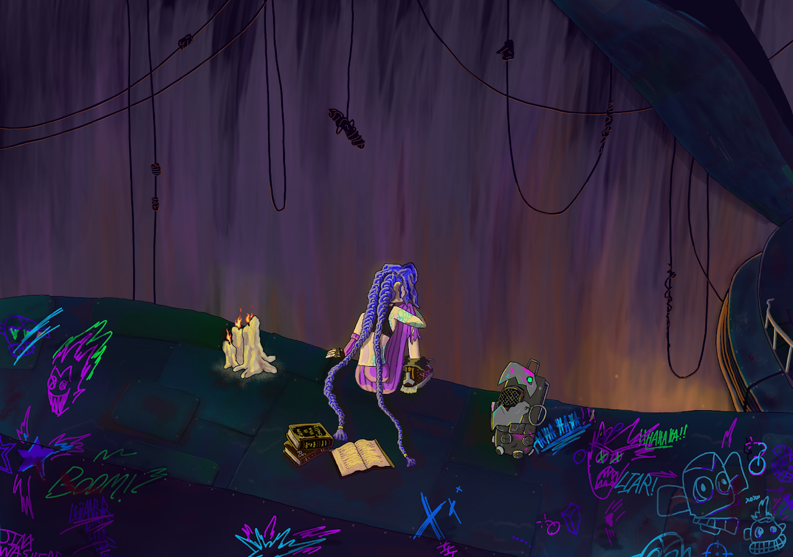
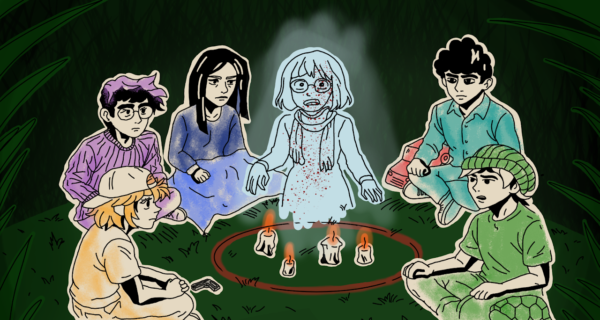

Hey, welcome to my little corner of the internet
Just a guy that likes to create!
I'm Hearin! I like drawing, making games, coming up with stories, and trying out whatever ideas pop into my head. My goals are to create, and make people smile a little :)
Drawing ✦ Making games ✦ Telling stories

A little art, a little storytelling, and whatever else I dream up.
01 / Selected workThe portfolio
Here's what I've been making.
Drawings, games, stories, and whatever else I get the urge to make.

Lorcana art & character ideas
My take on familiar characters, with a little fantasy mixed in.
.jpg)
Art Fight
Drawings I've made for other artists during Art Fight.

The sketchbook
A peek at the doodles, rough ideas, and everything in between.

Jinx Listens
A quiet moment with Jinx, some soft jazz, and a lot on her mind.

The séance
A group of friends, a missing person, and a séance that might bring some answers.

Making games
I don't just draw. I like building games and bringing my ideas to life, too.

A closer look
What if the story went a little differently?
I love taking characters I grew up with and imagining them in a completely different adventure. That's where my fantasy game mat ideas started. What would happen if the Hundred Acre Wood needed heroes?
See the artworkPersonal fan concepts. Not affiliated with or endorsed by Disney Lorcana or Ravensburger.
A little bit of everything
There's always another idea.
Sometimes it's a character, sometimes it's a sketch, and sometimes I just want to try something new. Here's some of the other stuff I've been making!
Let's make something
Have a project in mind?
Have an illustration idea or a project you think I'd enjoy? Send me a message! I'd love to hear about it.
Get in touch